Last updated: 2023-07-25
Checks: 5 2
Knit directory: DEanalysis/
This reproducible R Markdown analysis was created with workflowr (version 1.7.0). The Checks tab describes the reproducibility checks that were applied when the results were created. The Past versions tab lists the development history.
The R Markdown is untracked by Git. To know which version of the R
Markdown file created these results, you’ll want to first commit it to
the Git repo. If you’re still working on the analysis, you can ignore
this warning. When you’re finished, you can run
wflow_publish to commit the R Markdown file and build the
HTML.
Great job! The global environment was empty. Objects defined in the global environment can affect the analysis in your R Markdown file in unknown ways. For reproduciblity it’s best to always run the code in an empty environment.
The command set.seed(20230508) was run prior to running
the code in the R Markdown file. Setting a seed ensures that any results
that rely on randomness, e.g. subsampling or permutations, are
reproducible.
Great job! Recording the operating system, R version, and package versions is critical for reproducibility.
Nice! There were no cached chunks for this analysis, so you can be confident that you successfully produced the results during this run.
Using absolute paths to the files within your workflowr project makes it difficult for you and others to run your code on a different machine. Change the absolute path(s) below to the suggested relative path(s) to make your code more reproducible.
| absolute | relative |
|---|---|
| ~/Google Drive/My Drive/spatial/10X/DEanalysis | . |
Great! You are using Git for version control. Tracking code development and connecting the code version to the results is critical for reproducibility.
The results in this page were generated with repository version 5d24aae. See the Past versions tab to see a history of the changes made to the R Markdown and HTML files.
Note that you need to be careful to ensure that all relevant files for
the analysis have been committed to Git prior to generating the results
(you can use wflow_publish or
wflow_git_commit). workflowr only checks the R Markdown
file, but you know if there are other scripts or data files that it
depends on. Below is the status of the Git repository when the results
were generated:
Untracked files:
Untracked: .DS_Store
Untracked: .Rhistory
Untracked: analysis/.DS_Store
Untracked: analysis/.Rhistory
Untracked: analysis/data_clusters.Rmd
Untracked: analysis/group12_13.Rmd
Untracked: analysis/group12_19.Rmd
Untracked: analysis/group2_19.Rmd
Untracked: analysis/group8_17&2_19.Rmd
Untracked: analysis/group8_17.Rmd
Untracked: analysis/methods_details.Rmd
Untracked: analysis/new_criteria.Rmd
Untracked: data/.Rhistory
Untracked: data/10X_inputdata.RData
Untracked: data/10X_inputdata_DEresult.RData
Untracked: data/10X_inputdata_cpm.RData
Untracked: data/10X_inputdata_integrated.RData
Untracked: data/10X_inputdata_lognorm.RData
Untracked: data/10Xdata_annotate.rds
Unstaged changes:
Modified: analysis/index.Rmd
Note that any generated files, e.g. HTML, png, CSS, etc., are not included in this status report because it is ok for generated content to have uncommitted changes.
These are the previous versions of the repository in which changes were
made to the R Markdown (analysis/group8_17.Rmd) and HTML
(docs/group8_17.html) files. If you’ve configured a remote
Git repository (see ?wflow_git_remote), click on the
hyperlinks in the table below to view the files as they were in that
past version.
| File | Version | Author | Date | Message |
|---|---|---|---|---|
| html | f314434 | C-HW | 2023-07-25 | add muscat methods |
| html | 7ee9782 | C-HW | 2023-07-13 | add 8_17 |
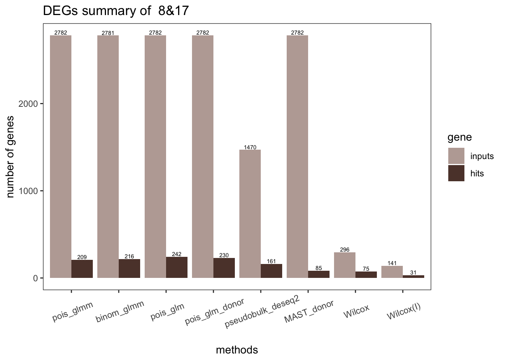
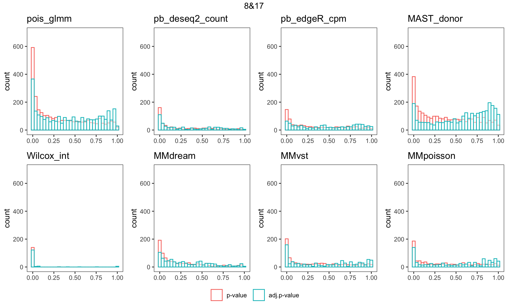
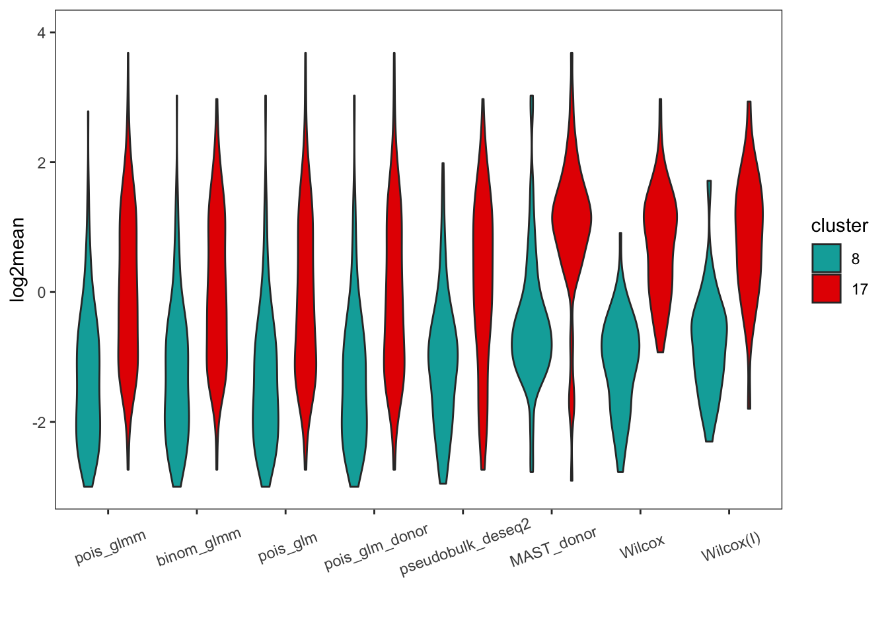
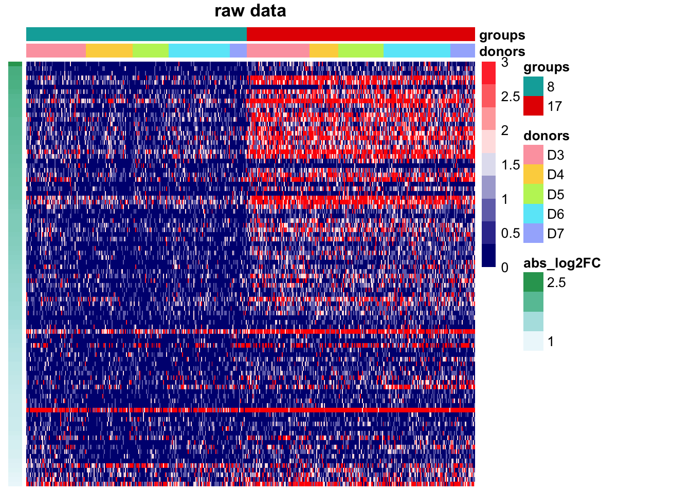
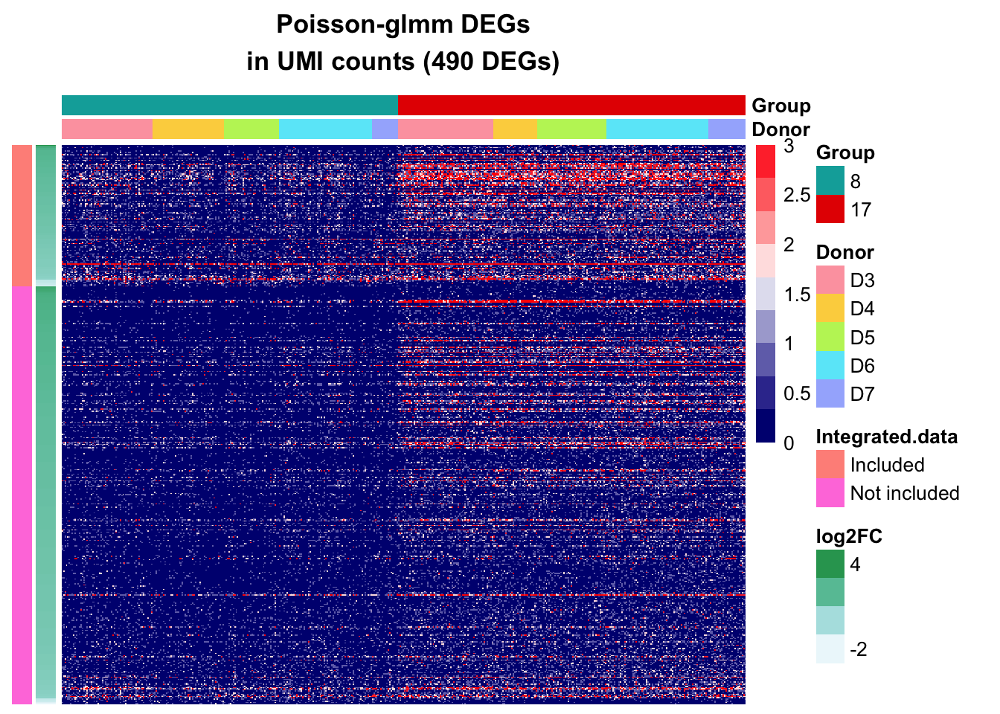
| Version | Author | Date |
|---|---|---|
| 7ee9782 | C-HW | 2023-07-13 |
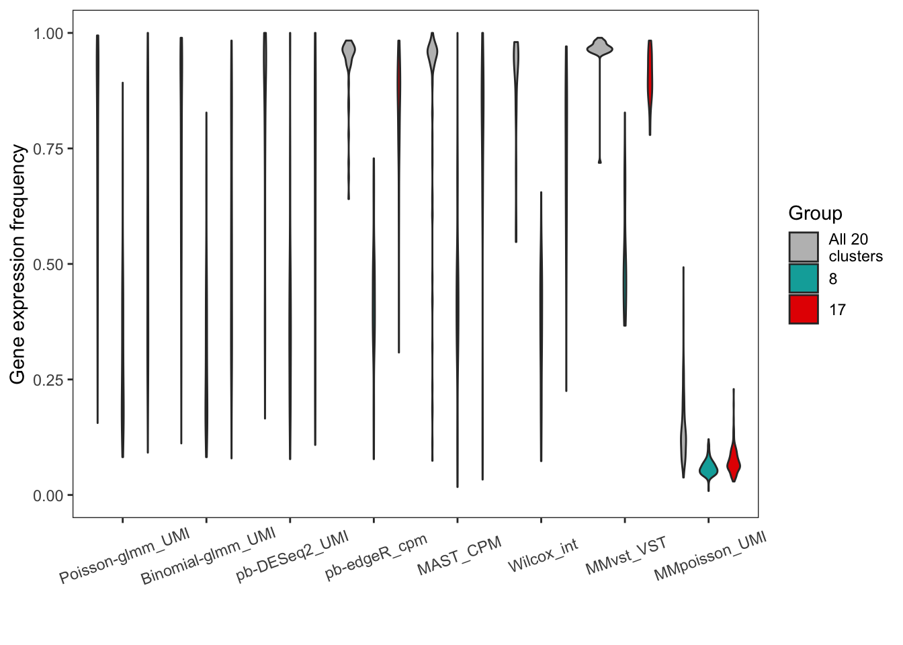
| Version | Author | Date |
|---|---|---|
| 7ee9782 | C-HW | 2023-07-13 |
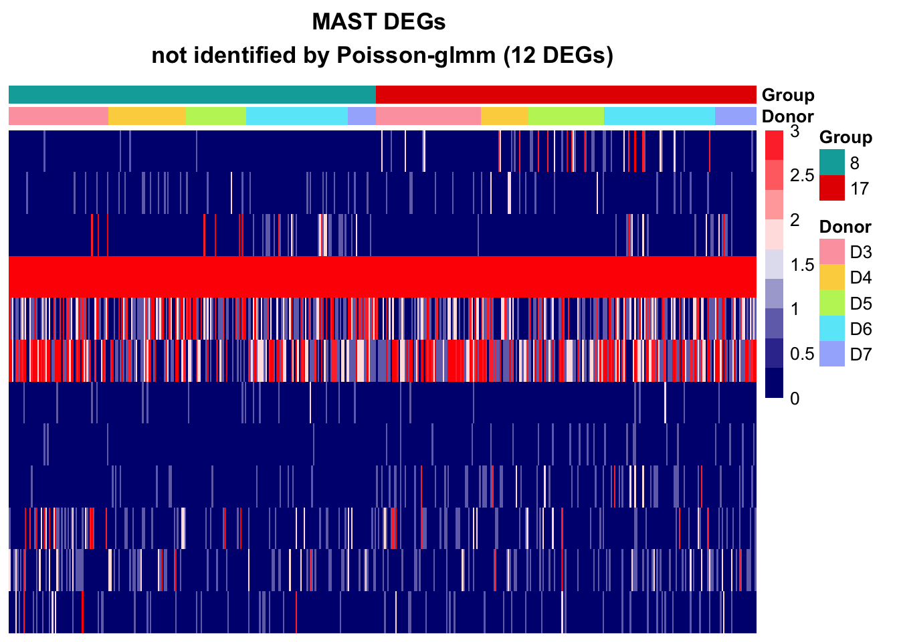
| Version | Author | Date |
|---|---|---|
| 7ee9782 | C-HW | 2023-07-13 |
In the MMpoisson model, cell type is considered as a random effect. This approach treats certain aspects of cell type variations as random factors. Consequently, it may obscure the true variation in cell types, limiting its ability to accurately reveal the specific differences between different cell types.
Additionally, the library size is employed as an offset to normalize the counts. That is, the model is considering rate instead of counts. Suppose some genes are highly expressed in one cell type than the other, the absolute difference could be eliminate after accounting for library size. This normalization approach may inadvertently mask certain gene expression differences between cell types.
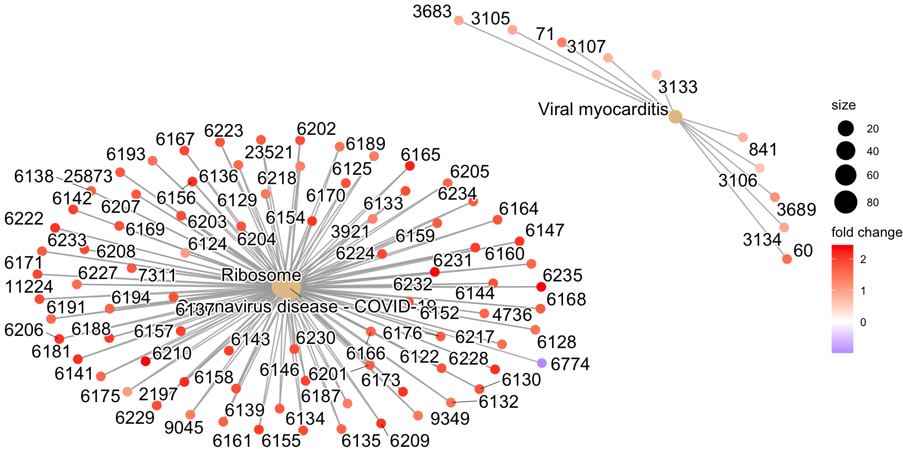
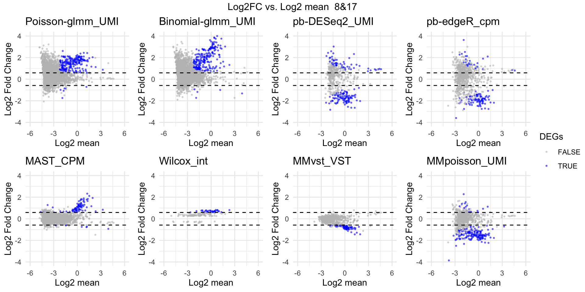
| Version | Author | Date |
|---|---|---|
| f314434 | C-HW | 2023-07-25 |
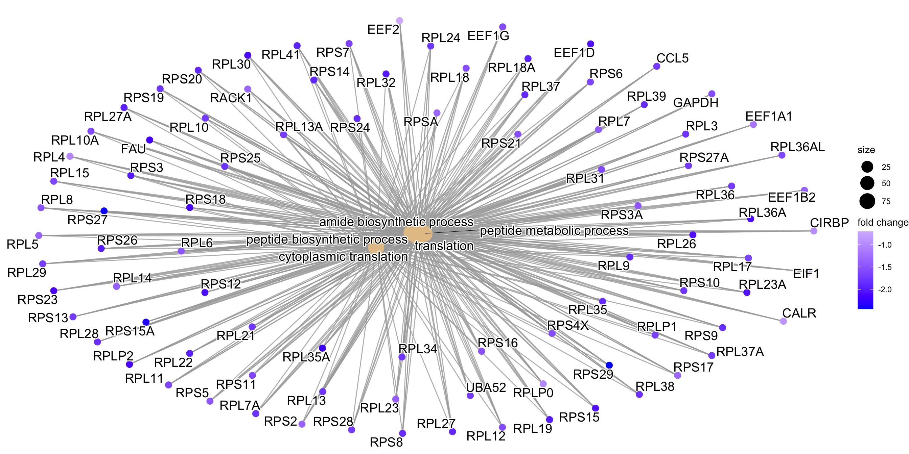
| Version | Author | Date |
|---|---|---|
| f314434 | C-HW | 2023-07-25 |
| Version | Author | Date |
|---|---|---|
| f314434 | C-HW | 2023-07-25 |
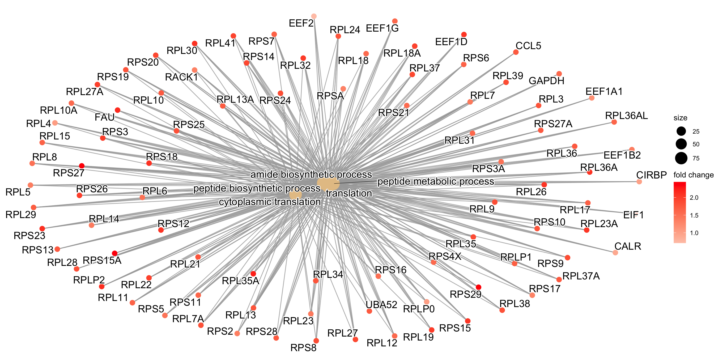
| Version | Author | Date |
|---|---|---|
| f314434 | C-HW | 2023-07-25 |
sessionInfo()R version 4.2.2 (2022-10-31)
Platform: x86_64-apple-darwin17.0 (64-bit)
Running under: macOS Big Sur ... 10.16
Matrix products: default
BLAS: /Library/Frameworks/R.framework/Versions/4.2/Resources/lib/libRblas.0.dylib
LAPACK: /Library/Frameworks/R.framework/Versions/4.2/Resources/lib/libRlapack.dylib
locale:
[1] en_US.UTF-8/en_US.UTF-8/en_US.UTF-8/C/en_US.UTF-8/en_US.UTF-8
attached base packages:
[1] stats4 stats graphics grDevices utils datasets methods
[8] base
other attached packages:
[1] DESeq2_1.38.3 pathview_1.38.0
[3] org.Hs.eg.db_3.16.0 AnnotationDbi_1.60.2
[5] enrichplot_1.18.4 clusterProfiler_4.6.2
[7] reshape_0.8.9 gridExtra_2.3
[9] pheatmap_1.0.12 SingleCellExperiment_1.20.1
[11] SummarizedExperiment_1.28.0 Biobase_2.58.0
[13] GenomicRanges_1.50.2 GenomeInfoDb_1.34.9
[15] IRanges_2.32.0 S4Vectors_0.36.2
[17] BiocGenerics_0.44.0 MatrixGenerics_1.10.0
[19] matrixStats_1.0.0 ggpubr_0.6.0
[21] dplyr_1.1.2 ggplot2_3.4.2
loaded via a namespace (and not attached):
[1] shadowtext_0.1.2 backports_1.4.1 fastmatch_1.1-3
[4] workflowr_1.7.0 plyr_1.8.8 igraph_1.5.0
[7] lazyeval_0.2.2 splines_4.2.2 BiocParallel_1.32.6
[10] digest_0.6.33 yulab.utils_0.0.6 htmltools_0.5.5
[13] GOSemSim_2.24.0 viridis_0.6.3 GO.db_3.16.0
[16] fansi_1.0.4 magrittr_2.0.3 memoise_2.0.1
[19] annotate_1.76.0 Biostrings_2.66.0 graphlayouts_1.0.0
[22] colorspace_2.1-0 blob_1.2.4 ggrepel_0.9.3
[25] xfun_0.39 crayon_1.5.2 RCurl_1.98-1.12
[28] jsonlite_1.8.7 graph_1.76.0 scatterpie_0.2.1
[31] ape_5.7-1 glue_1.6.2 polyclip_1.10-4
[34] gtable_0.3.3 zlibbioc_1.44.0 XVector_0.38.0
[37] DelayedArray_0.24.0 car_3.1-2 Rgraphviz_2.42.0
[40] abind_1.4-5 scales_1.2.1 DOSE_3.24.2
[43] DBI_1.1.3 rstatix_0.7.2 Rcpp_1.0.11
[46] xtable_1.8-4 viridisLite_0.4.2 gridGraphics_0.5-1
[49] tidytree_0.4.4 bit_4.0.5 httr_1.4.6
[52] fgsea_1.24.0 RColorBrewer_1.1-3 XML_3.99-0.14
[55] pkgconfig_2.0.3 farver_2.1.1 sass_0.4.7
[58] locfit_1.5-9.8 utf8_1.2.3 labeling_0.4.2
[61] ggplotify_0.1.1 tidyselect_1.2.0 rlang_1.1.1
[64] reshape2_1.4.4 later_1.3.1 munsell_0.5.0
[67] tools_4.2.2 cachem_1.0.8 downloader_0.4
[70] cli_3.6.1 generics_0.1.3 RSQLite_2.3.1
[73] gson_0.1.0 broom_1.0.5 evaluate_0.21
[76] stringr_1.5.0 fastmap_1.1.1 yaml_2.3.7
[79] ggtree_3.6.2 knitr_1.43 bit64_4.0.5
[82] fs_1.6.3 tidygraph_1.2.3 purrr_1.0.1
[85] KEGGREST_1.38.0 ggraph_2.1.0 nlme_3.1-162
[88] whisker_0.4.1 KEGGgraph_1.58.3 aplot_0.1.10
[91] compiler_4.2.2 rstudioapi_0.15.0 png_0.1-8
[94] ggsignif_0.6.4 treeio_1.22.0 geneplotter_1.76.0
[97] tibble_3.2.1 tweenr_2.0.2 bslib_0.5.0
[100] stringi_1.7.12 highr_0.10 lattice_0.21-8
[103] Matrix_1.5-4.1 vctrs_0.6.3 pillar_1.9.0
[106] lifecycle_1.0.3 jquerylib_0.1.4 data.table_1.14.8
[109] cowplot_1.1.1 bitops_1.0-7 httpuv_1.6.11
[112] patchwork_1.1.2 qvalue_2.30.0 R6_2.5.1
[115] promises_1.2.0.1 codetools_0.2-19 MASS_7.3-60
[118] rprojroot_2.0.3 withr_2.5.0 GenomeInfoDbData_1.2.9
[121] parallel_4.2.2 grid_4.2.2 ggfun_0.1.1
[124] tidyr_1.3.0 HDO.db_0.99.1 rmarkdown_2.23
[127] carData_3.0-5 ggnewscale_0.4.9 git2r_0.32.0
[130] ggforce_0.4.1